Muscular system
Cardiac Muscle
Cardiac Muscle (Low - 250µm)
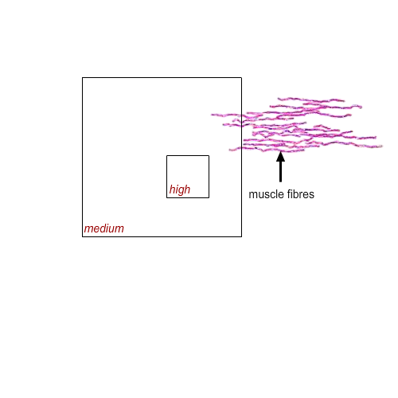
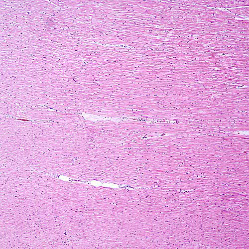
Cardiac Muscle (Medium - 50µm)
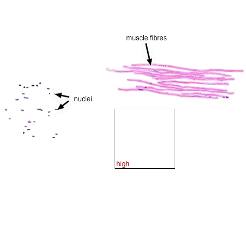
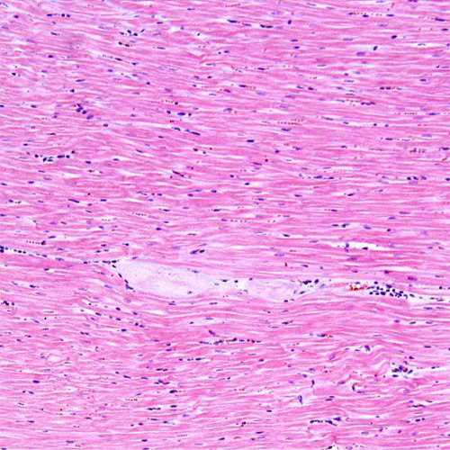
Cardiac Muscle (High - 50µm)
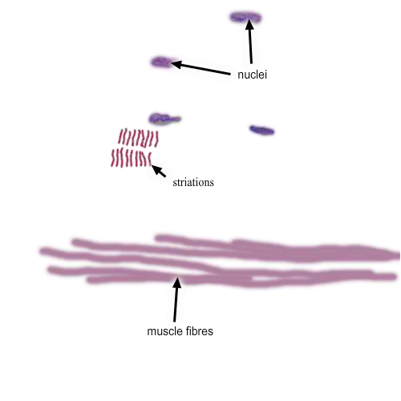
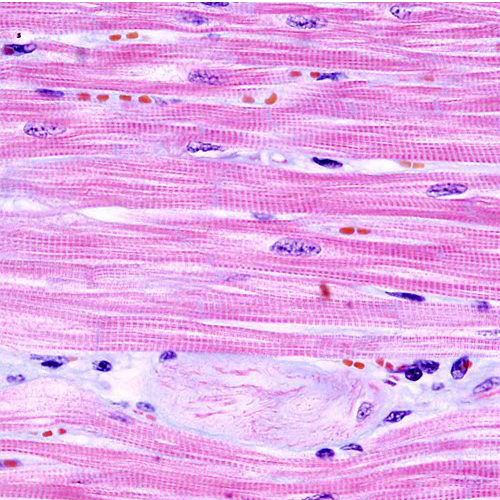
Smooth Muscle
Smooth Muscle (Low - 250µm)
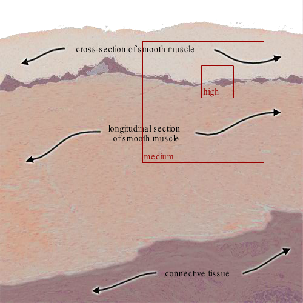
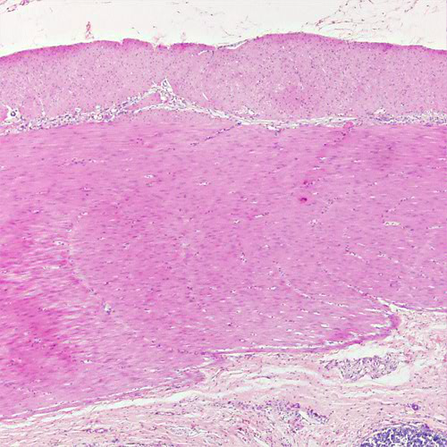
Smooth Muscle (Medium - 50µm)
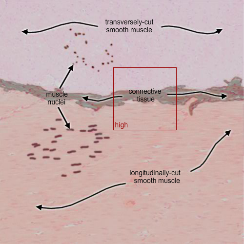
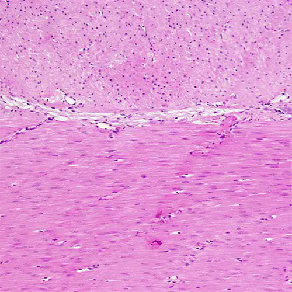
Smooth Muscle (High - 50µm)
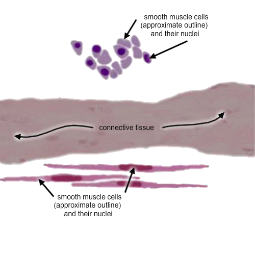
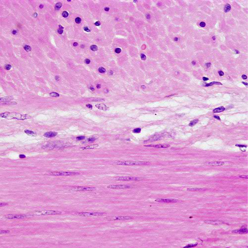
Skeletal Muscle
Skeletal Muscle (Low - 250µm)
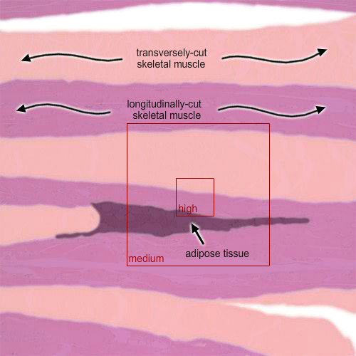
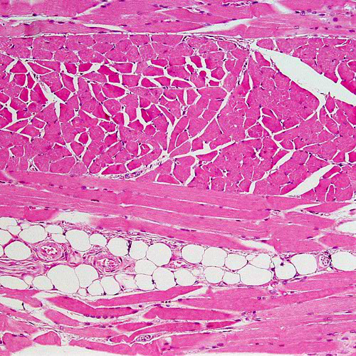
Smooth Muscle (Medium - 50µm)
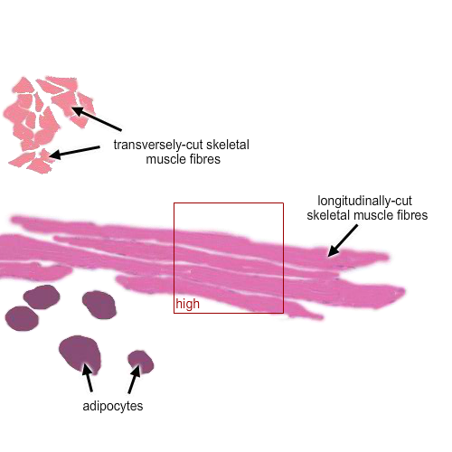
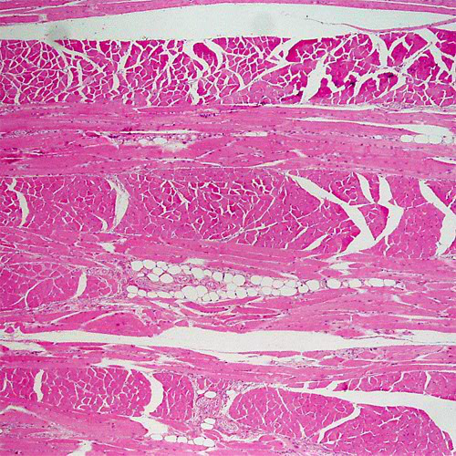
Smooth Muscle (High - 50µm)
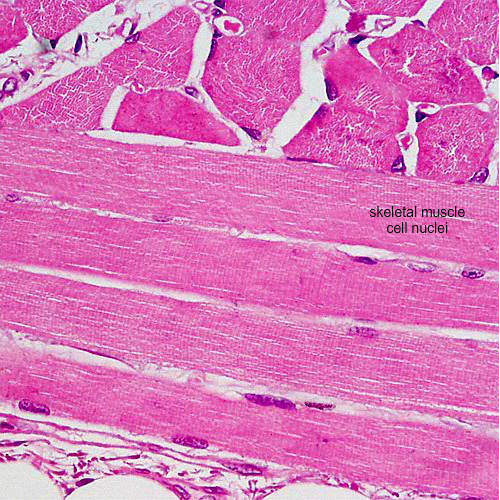
Motor End Plate
Skeletal Muscle (Low - 250µm)
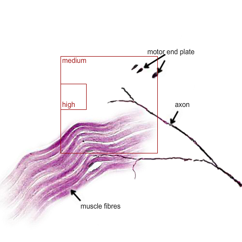
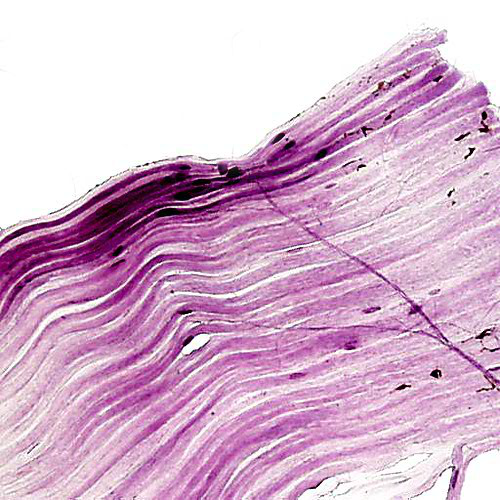
Smooth Muscle (Medium - 50µm)
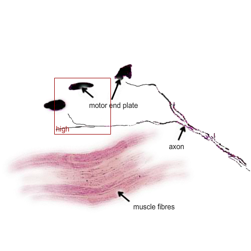
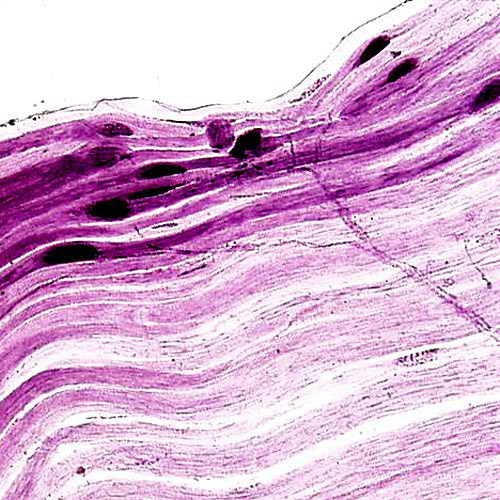
Smooth Muscle (High - 50µm)
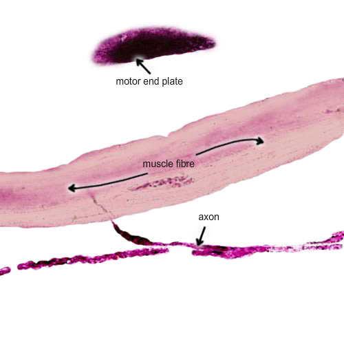
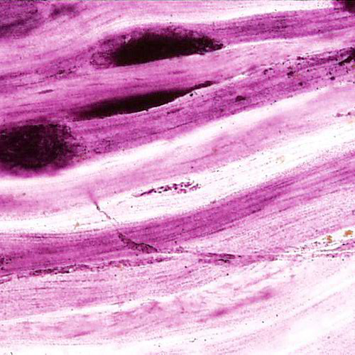